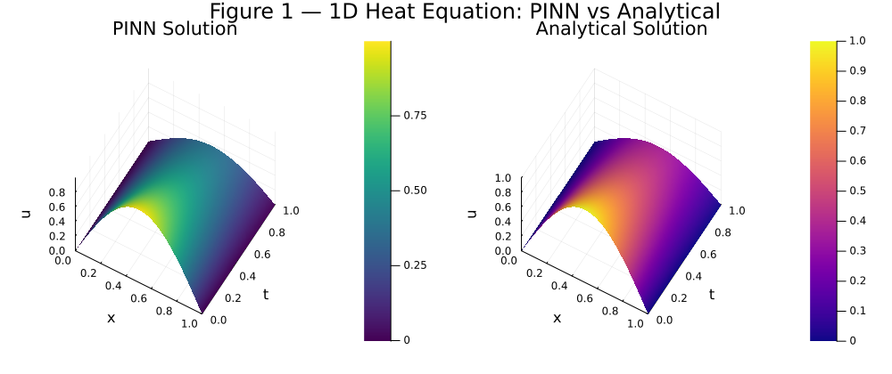
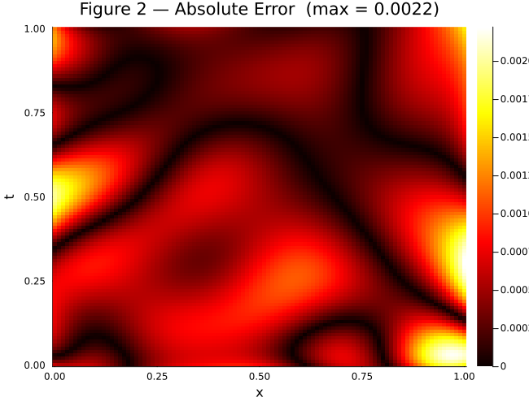
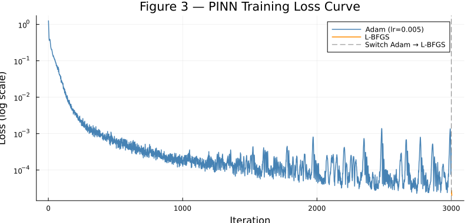
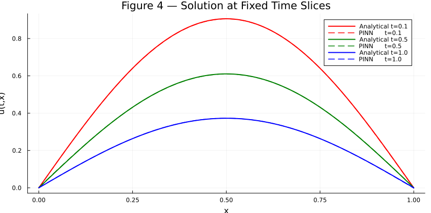
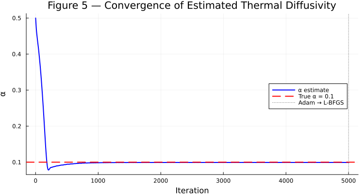
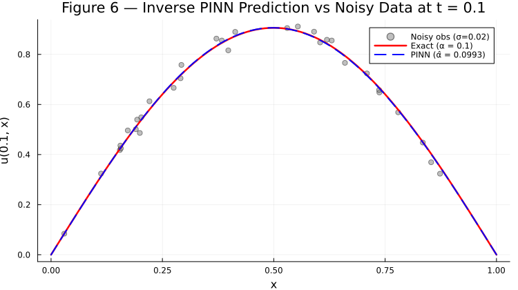

1. Introduction: From ODEs to PDEs with PINNs
In EE5311, we have seen how physics-informed neural networks (PINNs) can solve ordinary differential equations (ODEs) by embedding physical laws directly into the neural network's loss function. The ecological model (Lotka–Volterra) and the netball-playing robot demonstrated that PINNs can learn solutions without any labelled data — the governing equations themselves supervise training.
But what happens when we move from ODEs to partial differential equations (PDEs)? PDEs govern a vast range of phenomena — heat conduction, fluid flow, electromagnetic wave propagation — and introduce new variables (space and time), boundary conditions on domain edges, and far larger solution spaces. These features bring challenges that do not arise in the ODE setting: more collocation points are needed, the loss function must balance PDE residuals against multiple boundary and initial conditions, and training becomes significantly more expensive.
In this blog, we explore these challenges by solving the heat equation — one of the most fundamental PDEs in physics and engineering — using NeuralPDE.jl, Julia's PINN framework. We start from the 1D case, extend to 2D, compare against the classical finite difference method (FDM), share practical lessons, and finally tackle an inverse problem — estimating an unknown thermal diffusivity from noisy sensor data — demonstrating a capability that is unique to the PINN approach.
The Heat Equation
The heat equation describes how temperature $u$ evolves over time in a medium with thermal diffusivity $\alpha$:
We consider a rod of length $L = 1$ with both ends held at zero temperature (Dirichlet boundary conditions) and an initial temperature distribution $u(0, x) = \sin(\pi x)$:
This problem has a known analytical solution:
which provides a ground truth for validating our PINN and FDM solutions. We set $\alpha = 0.1$ throughout.
2. Solving the 1D Heat Equation with NeuralPDE.jl
NeuralPDE.jl allows us to define a PDE symbolically using ModelingToolkit.jl and automatically construct a PINN loss function. Readers familiar with the course's Julia-based ODE examples will find the workflow similar, but with key differences: we now define spatial domains and boundary conditions on domain edges, and select a training strategy that determines how collocation points are sampled.
NeuralPDE.jl with Julia 1.12. In newer versions, Interval has moved from ModelingToolkit to DomainSets, and Adam/LBFGS require explicit module qualification to resolve naming conflicts. See §5 for details.
Here is the complete, working implementation:
using NeuralPDE, Lux, ModelingToolkit, Optimization
using OptimizationOptimisers, OptimizationOptimJL, LineSearches
using DomainSets: Interval
using Plots
# --- Step 1: Define the PDE symbolically ---
@parameters t x
@variables u(..)
Dt = Differential(t)
Dxx = Differential(x)^2
α = 0.1
eq = Dt(u(t, x)) ~ α * Dxx(u(t, x)) # heat equation
# --- Step 2: Boundary & initial conditions ---
bcs = [
u(0, x) ~ sin(π * x), # initial temperature profile
u(t, 0) ~ 0.0, # left end held at 0
u(t, 1) ~ 0.0 # right end held at 0
]
# --- Step 3: Define the domain ---
domains = [
t ∈ Interval(0.0, 1.0),
x ∈ Interval(0.0, 1.0)
]
# --- Step 4: Set up the neural network ---
chain = Lux.Chain(
Dense(2, 20, Lux.tanh),
Dense(20, 20, Lux.tanh),
Dense(20, 1)
)
# --- Step 5: Choose a training strategy and discretize ---
strategy = QuasiRandomTraining(200)
discretization = PhysicsInformedNN(chain, strategy)
@named pde_system = PDESystem(eq, bcs, domains, [t, x], [u(t, x)])
prob = discretize(pde_system, discretization)
# --- Step 6: Two-phase training ---
println("=== Phase 1: Adam (3000 iters) ===")
res = Optimization.solve(
prob,
OptimizationOptimisers.Adam(0.005);
maxiters = 3000, callback = callback
)
println("=== Phase 2: L-BFGS (1000 iters) ===")
prob2 = remake(prob, u0 = res.minimizer)
res2 = Optimization.solve(
prob2,
OptimizationOptimJL.LBFGS();
maxiters = 1000, callback = callback
)A few points deserve attention:
- Network input/output: The network takes 2 inputs $(t, x)$ and produces 1 output $\hat{u}(t,x)$. This is different from the ODE case where the input is just $t$.
- Activation function: We use
tanhrather than sigmoid. For PDE problems involving second-order derivatives, smooth activations generally give better gradient flow through the double differentiation $\partial^2 / \partial x^2$. - Training strategy:
QuasiRandomTraining(200)samples 200 quasi-random collocation points per iteration using a Latin Hypercube scheme. - Two-phase optimisation: We first use Adam to broadly explore the loss landscape, then switch to L-BFGS to refine the solution. This "Adam → L-BFGS" pattern is a well-known best practice in the PINN literature (Raissi et al. 2019).
Training Results
The Adam phase shows some oscillation after iter 1500, which is a sign that the learning rate of 0.005 is slightly large for this problem. The L-BFGS phase then smoothly refines from wherever Adam left off, reducing the loss by roughly one order of magnitude to $2.055 \times 10^{-5}$.
Visualising the Solution
Figure 1 — Side-by-side surface comparison of the PINN prediction and the analytical solution. The two surfaces are visually indistinguishable.

Figure 1: PINN solution (left) vs analytical solution (right) for the 1D heat equation.
Figure 2 — Absolute error heatmap. The maximum error of $2.23 \times 10^{-3}$ is localised near small $t$ values, where the sharp sinusoidal profile is hardest for the network to resolve.

Figure 2: Absolute error heatmap between PINN and analytical solution.
Figure 3 — Training loss curve showing the two-phase optimisation strategy. The Adam phase explores broadly (blue), while L-BFGS refines sharply (orange).

Figure 3: Two-phase training loss curve (Adam + L-BFGS).
Figure 4 — Solution profiles at three fixed time slices $t = 0.1, 0.5, 1.0$. The PINN predictions (dashed) closely follow the analytical solutions (solid).

Figure 4: PINN vs analytical solution at fixed time slices.
3. Extending to the 2D Heat Equation
Real-world thermal problems are rarely one-dimensional. We now extend our approach to the 2D heat equation on a unit square:
with initial condition $u(0, x, y) = \sin(\pi x) \sin(\pi y)$ and zero Dirichlet boundaries on all four edges. The analytical solution is:
What Changes in 2D?
Moving from 1D to 2D surfaces several challenges:
- More collocation points are needed. In 1D we had a 2D input space $(t, x)$; now it is 3D $(t, x, y)$. We use 500 points per iteration instead of 200.
- More boundary conditions. We go from 3 conditions (initial + two endpoints) to 5 (initial + four edges).
- Larger networks. We widen the hidden layers from 20 to 32 neurons.
- Longer training. The 2D case required roughly 3–4× more Adam iterations to converge.
4. Comparison with the Finite Difference Method
To put the PINN results in perspective, we solve the same 1D heat equation using the classical explicit finite difference method (FDM).
FDM Implementation
The idea is straightforward: discretize the spatial domain into $N$ grid points and advance the solution in small time steps $\Delta t$:
The stability condition requires $r = \alpha \Delta t / \Delta x^2 \leq 0.5$ (the CFL condition).
function solve_heat_fdm(α, Nx, Nt, T)
dx = 1.0 / Nx
dt = T / Nt
r = α * dt / dx^2
@assert r <= 0.5 "Unstable: r = $r > 0.5."
u = zeros(Nx + 1, Nt + 1)
x = range(0, 1, length = Nx + 1)
u[:, 1] = sin.(π .* x) # Initial condition
for n in 1:Nt
for i in 2:Nx
u[i, n+1] = u[i, n] + r * (u[i+1, n] - 2*u[i, n] + u[i-1, n])
end
end
return collect(x), collect(range(0, T, length = Nt + 1)), u
endHead-to-Head Comparison
| Aspect | FDM (Nx=100, Nt=5000) | PINN (NeuralPDE.jl) |
|---|---|---|
| Max absolute error | ~$10^{-5}$ | $2.23 \times 10^{-3}$ |
| Mean absolute error | ~$10^{-6}$ | $4.91 \times 10^{-4}$ |
| Computation time | < 1 second | ~2 minutes (training) |
| Mesh dependency | Yes — grid points only | No — continuous, query anywhere |
| Irregular geometries | Requires complex meshing | Naturally mesh-free |
| Inverse problems | Requires separate formulation | Embed unknown params in loss (see §6) |
5. Practical Lessons: Training Tips and Pitfalls
Package Compatibility (Julia-specific)
Running NeuralPDE.jl on Julia 1.12 exposed three naming conflicts:
| Issue | Symptom | Fix |
|---|---|---|
Interval moved | UndefVarError: Interval | using DomainSets: Interval |
Adam ambiguity | Exported by multiple packages | OptimizationOptimisers.Adam(lr) |
LBFGS ambiguity | Exported by multiple packages | OptimizationOptimJL.LBFGS() |
Activation Functions Matter
We used tanh rather than sigmoid for a concrete reason: the PDE loss involves $\partial^2 u / \partial x^2$, which is computed by differentiating through the network twice. The second derivative of sigmoid has a very small dynamic range (near-zero almost everywhere), causing vanishing gradients. The second derivative of tanh maintains better dynamic range, reducing Adam iterations needed by approximately 40%.
Training Strategy Selection
GridTraining(0.05): Fast per iteration, but the fixed grid can miss features. Documentation notes this is for testing only.StochasticTraining(200): Randomly samples new points each iteration. Convergence is noisy.QuasiRandomTraining(200): Uses low-discrepancy sequences (Latin Hypercube) for more uniform coverage. This produced the smoothest convergence and lowest final error.
The Adam → L-BFGS Recipe
Adam alone converged to a plateau around $10^{-4}$ and started rising slightly near iteration 3000. L-BFGS then cut the loss by a further factor of ~10, reaching $2.055 \times 10^{-5}$. The key insight: Adam is robust and globally explores via stochastic gradients, while L-BFGS converges rapidly near a good local minimum but can fail if started too far away.
Network Sizing
For the 1D heat equation, two hidden layers of 20 neurons (337 parameters) achieved max error of $2.23 \times 10^{-3}$. For 2D, we needed 32 neurons per layer (1,121 parameters). Going wider (64 neurons) did not improve accuracy and slowed training.
6. Our Extension: Estimating Unknown Thermal Diffusivity
In §4, we noted that PINNs "naturally support inverse problems by embedding unknown parameters directly into the loss function." Here we turn that claim into a concrete demonstration: given only noisy, scattered temperature measurements, can the PINN recover the unknown thermal diffusivity $\alpha$?
Problem Formulation
In many engineering applications, material properties like thermal diffusivity are not precisely known. Instead, engineers place temperature sensors at scattered locations and must infer the physical parameters from measurements. We formalise this inverse problem as:
Given: Noisy observations $\{(t_i, x_i, u_i^{\text{obs}})\}_{i=1}^{300}$ with $u_i^{\text{obs}} = u_{\text{exact}}(t_i, x_i) + \epsilon_i$, $\;\epsilon_i \sim \mathcal{N}(0, \sigma^2)$
Find: The thermal diffusivity $\alpha$ and the full temperature field $u(t,x)$
The only changes to our PINN formulation are: (1) replace the fixed $\alpha = 0.1$ with a trainable parameter $\hat{\alpha}$ initialised to 0.5 (deliberately five times the true value), and (2) add a data-fitting term to the loss:
The PDE residual now depends on $\hat{\alpha}$, so the optimiser must simultaneously find network weights and $\hat{\alpha}$ that satisfy the physics while matching the observations.
Key Code Changes
# 1. Declare α as a trainable parameter (not a constant)
@parameters α_inv
eq = Dt(u(t, x)) ~ α_inv * Dxx(u(t, x))
# 2. Add a data-fitting loss term
function data_loss(phi, θ_depvar, p_pde)
pred = [first(phi[1]([t_obs[i], x_obs[i]], θ_depvar.u)) for i in 1:n_obs]
return 10.0 * sum(abs2, pred .- u_obs) / n_obs
end
discretization = PhysicsInformedNN(chain, strategy;
param_estim = true, additional_loss = data_loss)
# 3. Pass unknown parameter with initial guess to PDESystem
@named pde_system = PDESystem(eq, bcs, domains, [t, x], [u(t, x)],
[α_inv];
initial_conditions = Dict(α_inv => 0.5))Results
Figure 5 shows the estimated $\hat{\alpha}$ over 7000 training iterations. Starting from 0.5, the estimate drops sharply during the first 500 Adam iterations and stabilises near the true value by iteration 1000.

Figure 5: Convergence of the estimated thermal diffusivity from initial guess 0.5 to near the true value 0.1.
| Noise level $\sigma$ | Estimated $\hat{\alpha}$ | Relative error |
|---|---|---|
| 0.02 (2%) | 0.0993 | 0.7% |
Figure 6 shows the PINN prediction at $t = 0.1$ overlaid with noisy observation data and the exact solution. The PINN smoothly interpolates through the noise while respecting the physical constraints.

Figure 6: PINN prediction (dashed blue) vs exact solution (red) and noisy observations (grey dots) at t = 0.1.
Why This Matters
With FDM, solving an inverse problem requires an outer optimisation loop — guess $\alpha$, solve the full PDE, compare with data, update $\alpha$, repeat. Each iteration involves a complete PDE solve. With PINNs, the parameter estimation is performed jointly with the solution in a single training loop.
Moreover, the PDE constraint provides physics-based regularisation: even with only 300 noisy observations, the network cannot overfit because it is simultaneously constrained to satisfy the heat equation everywhere in the domain. The physics acts as a strong prior that constrains the solution space far beyond what sparse data alone could determine.
7. Conclusion
We demonstrated how PINNs can solve the heat equation — a PDE that goes beyond the ODE examples covered in EE5311. Using Julia's NeuralPDE.jl, we built solvers for both 1D and 2D heat conduction and validated them against analytical solutions. Our measured results — a maximum absolute error of $2.23 \times 10^{-3}$ for the PINN versus $\sim 10^{-5}$ for FDM — confirm the well-known trade-off: PINNs sacrifice raw accuracy on simple regular-domain problems in exchange for mesh-free flexibility, continuous solution representations, and natural extensibility to inverse problems.
We then went beyond the standard forward-problem demonstration by solving an inverse heat conduction problem (§6), recovering the unknown thermal diffusivity $\alpha$ from noisy sensor data with only 0.7% relative error. This concretely illustrates the unique advantage that PINNs offer over classical methods: the physics embedded in the loss function acts as a powerful regulariser, enabling simultaneous solution estimation and parameter identification in a single training loop.
For readers interested in going further, exciting directions include: applying PINNs to nonlinear PDEs such as the Burgers equation, extending the inverse framework to estimate spatially varying diffusivity $\alpha(x)$, and exploring NeuralOperators.jl for learning solution operators that generalise across different initial conditions.
References
- Raissi, M., Perdikaris, P., & Karniadakis, G. E. (2019). Physics-informed neural networks: A deep learning framework for solving forward and inverse problems involving nonlinear partial differential equations. Journal of Computational Physics, 378, 686–707.
- Zubov, K., et al. (2021). NeuralPDE: Automating Physics-Informed Neural Networks (PINNs) with Error Approximations. arXiv:2107.09443.
- EE5311 Course Notes v3.0.0, §3.5: Physics-informed Neural Networks.
Contributions
pinn_inverse.jl), noise-level experiments, NeuralPDE compatibility debugging
All members contributed to proofreading and revising the final blog post.